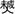

承舜公世伦房世录 |
三十二世 |
承舜长子 |
世伦 |
字达五，号寿官，生于雍正甲辰年五月十五日申时，殁于庚申年四月初六日亥时，葬扶村江古脑架枧窝里凤形庚山甲向。配唐氏雪娘，生于雍正壬子年十月十六日戍时，殁于乾隆己酉年十一月二十一日酉时，葬河洞黾形宠祖坟内右边庚甲兼酉卯。生子四：大贵、大勋、大汉、大新。 |
三十三世 |
世伦长子 |
大贵 |
字非贤，生乾隆庚午年六月二十八日未时，殁乾隆丙午年正月初六日巳时，葬梅坑蛇形祖坟脚下乙山辛向。配扶氏凤姬，生于乾隆甲戊年十一月十七日酉时，殁失考，葬长岭背牛形庚山甲向。生子二：兴序、兴仁。遗下扶村上巷右边第一廊下截第七间屋一间，又傍屋右边第二廊第一间屋一间，位下子孙承管。 |
世伦次子 |
大勋 |
字纯德，生于乾隆壬申年九月初十日辰时，殁于嘉庆丁丑年正月初十日辰时，葬扶村上巷屋背右边二排壬丙兼亥巳。配黄氏清连，生于乾隆丙子年三月初七日申时，殁于道光丁亥年正月二十九日，葬与夫同墓。生子三：兴昌、兴崇、兴璜。计遗下一都扶村上巷屋背坐身右边脚门内屋一间傍屋上截第一间屋一间，大勋祖位下均管此订。 |
世伦三子 |
大汉 |
字楚池，生于乾隆乙酉六月十一日卯时，殁于乾隆乙巳年十月初八日酉时，葬扶村祠堂角上堪脑里。 |
世伦四子 |
大新 |
字暄然，生于乾隆巳亥年十月初九日巳时，殁失考，葬上巷屋背壬山丙向。配黄倚儒女，生于乾隆戊戍年十二月二十九日巳时，殁于道光己酉年三月十五日酉时，葬上巷屋背壬山丙向。生子二：兴颖、兴性。计遗下一都扶村上巷右边第二廊傍屋第二间屋一间，永为夫妇蒸尝位下均管此订。 |
三十四世 |
大贵长子 |
兴序 |
字摛藻，生于乾隆壬寅年四月初五日寅时，殁失考，葬上巷屋背壬山丙向，配扶氏辰元长女青兰，生于乾隆辛丑年正月十九日巳时，殁葬失考。 |
大贵次子 |
兴仁 |
字铨余，生于乾隆甲辰年又三月十八日子时，殁失考，葬上巷屋角壬山丙向。配黄起凡次女满兰，生于乾隆乙巳年七月二十七日午时，殁失考，葬与夫同墓。生子二：启芬、启芳。生女二：彩容、究仔。 |
大勋长子 |
兴昌 |
字书文，生于乾隆乙未年八月二十五日戍时，殁失考，葬上巷屋角园背壬山丙向。配黄圣轩长女桂兰，生于乾隆丙申年九月初十日戍时，殁失考，葬江古脑中埂丁山癸向。生子二：启时、启祥。 |
大新长子 |
兴颖 |
字狗仔，生于嘉庆丙辰年十月二十九日酉时，殁失考，葬江古脑架枧窝里凤形左手壬山丙向。 |
大新次子 |
兴性 |
字义池，生于嘉庆壬戍年二月初一日辰时，殁咸丰丁巳年六月十三日午时，葬梅坑蛇形酉山卯向。配陈氏，生殁葬失考，生子一：启联；生女一：思桃适张莲芳。 |
三十五世 |
兴仁长子 |
启芬 |
生殁葬失考。 |
兴仁次子 |
启芳 |
字贵兴，生道光甲申年十一月二十八日子时，殁光绪庚子年五月二十七日戍时，葬二都蕉源烂泥坑，配郭氏，生殁失考，葬二都蕉源烂泥坑。继配郭氏翠娘，生道光辛丑年四月十二日丑时，殁葬失考。计遗下二都蕉源香瓜垅屋背山岭一大块，上至岭顶倒水为界，下至圳止，左至横笼里窝止，右至香瓜垅屋背右边埂止，又大烟山水口里山岭一大块，上至天水止，下至圳止，又至路直上止，右至横垅里埂止，永为夫妇位下子孙均管。 |
兴昌长子 |
启峙 |
生殁葬失考。 |
兴昌次子 |
启祥 |
字麟祥，生于嘉庆壬午年三月十三日酉时，殁失考，葬厢都。配萧氏，生殁葬失考。生子一：武年。 |
兴性之子 |
启联 |
字殿钦，生于道光壬辰年二月二十六日子时往外。配张氏，生殁失考，葬梅坑蛇形。 |
三十六世 |
启祥之子 |
武年 |
生于咸丰辛亥年七月初十日辰时，殁葬失考。 |
兴崇祖派下世录 |
三十四世 |
大勋次子 |
兴崇 |
字翠岩，生于乾隆庚子年四月二十七日申时，殁于道光丁酉年九月二十一日巳时，葬扶村下塘屋背亥山巳向。配扶氏，生于乾隆己亥年，殁失考，葬上巷屋背左边二埂子山午向。继配吴氏寿娘，生于乾隆乙未年九月初三日辰时，殁于嘉庆戊寅年七月十七日辰时，葬长岭背水口牛形庚山甲向。后迁葬上洞仔里长坪乾巽兼戊辰。生子五：启龙、启凤、启昌、启文、启华。计开遗下一都坳背洞口黾形田租二担正，永为崇祖夫妇蒸尝其粮在伦祖花户脚下。 |
三十五世 |
兴崇长子 |
启龙 |
字遇亨，生于嘉庆年正月十一日亥时，殁于光绪乙卯年十一月初二日亥时，葬一都扶村下塘屋背子山午向兼壬丙。配黄氏，生于嘉庆丙寅年十月二十八日子时，殁于道光丙午年四月十四日申时，葬一都扶村上巷屋背壬山丙向，生子二：武明、武贵过继启华为嗣。 |
兴崇次子 |
启凤 |
生于嘉庆丁卯年正月二十六日辰时，殁失考，葬一都鹅掌盈石榴排坐西向东。 |
兴崇三子 |
启昌 |
字依贤，生于嘉庆庚午年六月十一日未时，殁失考，葬一都鹅掌盈石头排坐西向东。配扶氏，生殁失考，葬与夫同墓。 |
兴崇四子 |
启文 |
字遇时，生于嘉庆壬申年七月二十一日戍时，殁于光绪丙戊年十月十四日申时，葬一都河洞山黾形酉卯兼庚甲。配黄氏蒙娘，生于嘉庆庚午年十月初一日子时，殁于光绪乙未年七月二十九日午时，葬一都中洞子里狮形癸山丁向兼子午。生子二：武金、武臣。生女一：秋鸾。 |
兴崇五子 |
启华 |
字祯元，生于嘉庆甲戊年九月二十八日辰时，殁于光绪癸未年十二月初七日辰时，葬一都洞口河洞口山黾形酉山卯向。配李氏桂娘，生于嘉庆壬申年八月二十五日酉时，殁于光绪甲申年七月初三日亥时，原葬一都扶村架枧窝里癸山丁向兼子午，后迁葬一都扶村上巷屋背凤形壬山丙向。生子一：武贵。 |
三十六世 |
启龙之子 |
武明 |
字序周，生于道光壬辰年六月初四日辰时，殁于民国癸丑年十一月初九日戍时，葬一都扶村架枧窝虎形庚山甲向兼申寅。配张氏，生于道光丁酉年三月初三日申时，殁失考，葬一都山坑新屋背坐西向东。继配郭氏闺名金连，生于咸丰癸丑年二月初八日戍时，殁于民国壬戊年九月初九日酉时，葬一都洞子里牛形癸丁兼己亥。生子六：昌义、昌才、昌永、昌仁、昌禄、昌连，生女三：孟回适黄静山，夏琼适黄年丰，润琼适郭上昭。 |
启文长子 |
武金 |
字圣言，生于一八四六年八月初三日巳时，殁于一八九一年十二月十二日辰时，葬一都扶村下塘屋背壬山丙向，后迁葬上巷屋背壬山丙向。配郭氏闺娘，生于一八六0年又三月十二日，殁于一九五八年十月二十九日午时，葬寨前新桥鳌鱼丘虎形垅。生子六：昌忠、昌家、石先、昌礼、昌泰、玉光。 |
启文次子 |
武臣 |
字玉谋，生于咸丰癸丑年十月二十六日申时，殁于光绪甲辰年八月初八日申时，葬于一都上洞仔里长坪乾巽兼戍辰。配黄氏眉娘，生于咸丰戊午五月二十一日申时，殁于光绪癸未年九月十四午时，葬与夫同墓。继配乌氏闺名金玉，生于咸丰丙辰年正月十五日亥时，殁于民国癸亥年八月十六日卯时，葬于一都扶村上巷屋背壬山丙向。生子三：昌孝、昌信、昌智；生女一：长蓉适黄作宾。 |
启华恩子 |
武贵 |
字道三，生于道光乙巳年四月二十日酉时，殁于民国乙丑年又四月二十三日辰时，葬一都洞口河洞口山黾形庚山甲向兼酉卯。配郭氏闺名淑娥，生于咸丰丙辰年十一月二十九日辰时，殁于民国庚辰年五月十七日戍时，葬一都扶村上巷屋背凤形壬山丙向。生子四：昌进、昌先、昌福、昌迪，生女三：掌屏适扶协邦，玉屏适扶质和，满屏适钟献珍。 |
三十七世 |
武明长子 |
昌义 |
字体才，生于同治乙丑年正月初二日寅时，殁失考，葬桂阳刺棚下坐西向东。配扶氏先桃，生殁失考，葬一都鹅掌盈塘窝里坐西向东。生子一：荣茂。 |
武明次子 |
昌才 |
生殁葬失考，配方氏出。 |
武明三子 |
昌永 |
乳名永才，生于光绪己卯十月十五日戍时，殁于光绪壬午年十二月十七日卯时，葬土公山苏洲坳。 |
武明四子 |
昌仁 |
字首常，生于一八八0年十一月十六日巳时，殁于一九六0年六月二十五日，葬大塘春峰鹅掌盈大弯里，配郭氏，生于一八八五年十月二十六日戍时，殁于一九二九年三月二十二日辰时，葬洞子里牛形癸山丁向。生子四：荣华、荣富、荣亲、荣新，生女一：顶和适方厥祥。继配陈氏雪娘，生于一八八五年十月二十六日，殁于一九三三年四月初四日酉时，葬一都黄龙过江巽山乾向。继配黄氏坤娘，生于一八九六年正月二十日戍时，殁于一九七一年十月十四日，葬大塘春峰鹅掌盈屋背凸。生子一：荣仕。 |
武明五子 |
昌禄 |
乳名禄才，生于光绪壬午年三月二十一日辰时，殁于光绪戊子年十二月初六日己时，葬土公山苏洲坳。 |
武明六子 |
昌连 |
生于光绪已丑年四月十二日卯时，殁戊辰年正月十九日，葬洞子里牛形，配郭氏蓉娘，生光绪癸已年正月初一日子时，殁己酉年十月初九日酉时，葬一都土公山苏洲坳。 |
武金长子 |
昌忠 |
生于光绪戊寅年七月初七日申时，殁于民国辛卯年七月初七日亥时，葬于一都土公山苏洲坳坐西向东。配陈氏，生殁失考，葬塘窝里。 |
武金次子 |
昌家 |
字锦铭，生一八八二年三月十三日子时，殁于一九七九年十月六日午时，葬寨前新桥鳌鱼丘垅靠里。配郭氏世移，生于一八九一年五月十七日寅时，殁于一九四二年七月十六日酉时，葬一都河洞山黾形庚甲兼酉卯，生子六：丙荣、荣陶、荣朝、荣文、荣汉、焱廷，生女四：焱和适方性成，菊和适郭德荣，雨和适扶冠朝，树和适郭日如。 |
武金三子 |
石先 |
生于光绪乙酉九月初四日未时，殁于光绪辛卯年七月初八日，葬土公山苏洲坳坐西向东。 |
武金四子 |
昌礼 |
字周和，生于一八八七年九月初二日酉时，殁于一九六0年十月二十七日戍时，葬寨前新桥鳌鱼丘虎形垅里。配陈氏闺名满屏，生于一八九七年八月初三日巳时，殁于一九三一年八月二十三日辰时，葬一都三槐垅里坤山艮向。生子二：万安、荣雄，生女三：凤和适扶会嘉，凤堂适唐必闻，凤成适李大元。继配黄氏清圆，生于一八九二年五月初十日辰时，殁于一九四九年六月二十一日酉时，葬梅坑双角垅鹅形坐西向东。 |
武金五子 |
昌泰 |
字福绵，生于一八九0年三月二十日丑时，殁于一九四九年五月初五日未时，葬扶村上巷屋背凤形壬丙兼亥己分金。配郭氏闺名招娘，生于一九00年六月二十三日戍时，殁于一九八三年一月二十六日辰时，葬扶村上堰屋背。子一：荣富，生女一：梓和。 |
武金六子 |
裕光 |
生于光绪壬辰年六月二十六日，殁于光绪壬辰年，葬狮子桥鹅形岭脑。 |
武臣长子 |
昌孝 |
字慕亲，生于光绪庚辰年七月十七日戍时，殁于民国戊辰年四月，葬一都上洞里长坪乾山巽向。配扶氏，生于光绪壬午年九月十四日酉时，殁失考，葬一都塘窝里坐北向南。继配钟氏闺名秋眉，生于同治甲戍年七月十三日辰时，生子六：荣诰、荣连、荣佑、荣周、荣喜、荣桂。 |
武臣次子 |
昌信 |
字与交，生于光绪庚寅年三月二十四日酉时，殁于民国甲子年正月初八日卯时，葬一都黄烟排张天盈。配陈氏，生于光绪癸巳年五月二十日，殁失考，葬中洞来仔窝里坐北向南。复配黄氏香娘，生于光绪丁酉年正月二十六日，殁于宣统辛亥年八月十四日，葬黄龙过江大石头脚下坐东向西。继配方氏闺名聪梅出。生女一：锡和适黄协如。 |
武臣三子 |
昌智 |
字有才，生于一八九三年一月三日子时，殁于一九六八年七月九日子时，葬大塘春峰上洞子里牛形。配罗氏翠兰，生于一八九0年一月九日卯时，殁于一九七五年七月二十八日申时，葬大塘陈家狮形。生子四：荣光、荣次、荣发、荣彰。 |
武贵长子 |
昌进 |
字翼如，生于光绪丙子年十月二十日酉时，殁失考，葬一都大塘黄土冲蛇形，继昌迪子荣锦承嗣。 |
武贵次子 |
昌先 |
乳名先喜，生殁失考，葬与兄同墓。 |
武贵三子 |
昌福 |
乳名福喜，生殁失考，葬与兄同墓。 |
武贵四子 |
昌迪 |
字吉祥，生于一八九三年十月六日戍时，殁于一九五六年九月二十七日申时，葬春峰竹子园大窝里。配方氏德贞，生于一八九七年四月十八日辰时，殁于一九六0年八月十八日辰时，葬春峰大坵里寨下屋背。生子五：荣锦、金铭、质彬、荣才、发周，生女八：长清、秀清、春荣适郭至元、冬荣适李自明、荣兰、判荣、根荣适方孝敏、秋荣适邓建修。 |
三十八世 |
昌义之子 |
荣茂 |
生于光绪丙戊年九月十一日亥时。 |
昌仁长子 |
荣华 |
生于宣统庚戊年四月初八日未时，殁于民国丙辰年九月初六日午时，葬土公山苏洲坳。 |
昌仁次子 |
荣富 |
字希陶，生于一九一七年八月十八日，殁于二OO一年八月十九日子时，葬大塘春峰横楼背学堂排烟坪里，配黄氏年香，生于一九二二年十二月二十五日辰时，殁于一九八五年二月十一日申时，葬大塘春峰横楼背大门喉屋背埂。生子三：盛珠、百良、柏平，生女二：春梅适郭名稳，锦梅适邓气和。 |
昌仁三子 |
荣亲 |
生于民国壬戊年六月初六日子时，殁于民国甲申年九月二十九日酉时，葬扶村上巷屋背坐西朝东。 |
昌仁四子 |
荣新 |
生于民国丁卯年正月初八日未时，殁葬失考。 |
昌仁五子 |
荣仕 |
乳名仕彬，生于一九三五年五月二十六日寅时，殁于一九九二年四月二十三日巳时，葬大塘春峰鹅掌盈老桥弯里。配黄氏冬容，生于一九三二年十月八日戍时，殁于一九九八年四月二日未时，葬大塘春峰鹅掌盈大弯里紫金祖壬山丁向。生子三：盛龙、梦龙、孟蛟。生女三：艳梅适郭爱中、晓梅适李松林、顺梅适郭卓平。 |
昌家长子 |
丙荣 |
生于民国壬子年十二月二十二日子时，殁葬失考。 |
昌家次子 |
荣陶 |
字显澄，生于一九一四年十二月二十四日巳时，殁于二00四年五月九日，葬于寨前新桥玉石垅圳面上。配黄氏秀云，生于一九二六年五月二十日巳时。生子四：盛军殁、春龙、顺龙、盛煌。 |
昌家三子 |
荣朝 |
乳名宗廷，生于一九一九年八月十八日午时，殁于一九九六年一月二十九日戍时，葬大塘乡大塘居委会陈家组罗郭庄盈。配黄氏弟闺，生于一九二七年八月二十六日酉时。生子四：盛河、柏松、任松、福松。生女四：长华适扶长其、素华适陈相君、美华适方冬才、满华适方玉龙。 |
昌家四子 |
荣文 |
乳名炫廷，生于一九二二年二月十四日辰时，殁于一九九九年五月二十五日戍时，葬寨前新桥鳌鱼丘三背玄屋背。配李氏桂香，生于一九二三年一月二十一日巳时，殁于一九九四年九月二十六日子时，葬寨前新桥石鼓庙。生子三：盛全、盛安、耀荣。生女三：利华适方学安、耀华适黄存让、树华适扶福兴。 |
昌家五子 |
荣汉 |
乳名汉尧，字杰山，生于一九二八年十月二十四日亥时，殁于一九八九年十一月二十四日午时，葬大塘陈家狮形。配黄氏运娇，生于一九三二年十月四日，殁于公元二00五年五月二十一日寅时，葬大塘陈家鹅形岭。生子四：步阶、盛皆、盛林、盛刚，生女四：春华适方友祥、秋华适郭桂前、爱华适吴镇钦、春环适吴若飞。 |
昌家六子 |
焱廷 |
生于民国庚午年三月初五午时，殁于民国戊寅年九月十九日酉时，葬鹅形岭顶，坐东北向西南。 |
昌礼长子 |
万安 |
生于民国庚申年十一月十八日戍时，殁于民国壬戍年七月，葬石头排坐南向北。 |
昌礼次子 |
荣雄 |
字冠豪，生于一九二七年十二月二十二日戍时，殁于二00一年三月七日未时，葬寨前新桥鳌鱼丘梅坑口里。配黄氏招弟，生于一九三0年七月十一日，殁于一九六六年十月二十五日辰时，葬寨前新桥鳌鱼丘虎形垅里。生子三：传宗、顺宗、耀宗，生女一：素珠适方佑林。 |
昌泰之子 |
荣富 |
字贵华，生于一九二五年二月二日丑时，殁于一九五六年六月四日，葬寨前新桥江古脑。配邱氏雪媚，生于一九二九年九月十三日亥时，殁于一九九三年六月四日，葬寨前新桥鳌鱼坵鹅子坵田面上。生子二：盛洋（泉江）、正权。生女一：瑞玲适郭绍基，继配郭建球。 |
昌孝长子 |
荣诰 |
生于一九0二年九月十六日，幼殁，葬大塘狮子桥鹅形岭脑。 |
昌孝次子 |
荣连 |
乳名连周，字仁风，生于公元一九0四年三月四日丑时，殁于公元一九五八年十一月二十六日戍时，葬于大塘乡大塘居委会上段坛官前狮形。配黄氏锦容，生于公元一九0九年一月十八日子时，殁于公元一九八二年二月十八日寅时，葬于大塘乡大塘居委会陈家狮形。生子四：盛光、盛福、盛昭、盛乾；生女三：珍珠适郭耀锋，顺珠适扶翊文，宝珠适黄志成。 |
昌孝三子 |
荣佑 |
乳名佑周，生于一九0七年二月二日巳时，殁失考，葬扶村上巷屋背。 |
昌孝四子 |
荣周 |
乳名润周，生于一九0九年五月二十五日未时，殁于一九八四年十一月十九日，葬大塘春峰塘喉下垅里禾尚盈。配张氏秀云，生于一九一0年十月二日酉时，殁于一九八二年十月二十七日，葬大塘春峰塘喉下垅里对门。生子三：盛铭、盛全、盛良，生女一：珠仔夭。 |
昌孝五子 |
荣喜 |
生于宣统辛亥年，殁失考，葬 仔窝里坐北向南。 |
昌孝六子 |
荣桂 |
乳名桂周，生于民国癸丑年十月十九日亥时，殁失考，葬扶村上巷屋背壬山丙向。 |
昌智长子 |
荣光 |
字焕兴，生于一九一四年七月二十四日子时，殁于一九九三年八月二十三日辰时，葬大塘陈家大排脑。配邓氏彩仁，生于一九二0年七月五日未时，殁于一九五五年五月二十八日寅时，葬大塘陈家背垅后背。生子三：盛元、盛斌过继荣发为嗣、会隆幼殁。生女一：耒凤适陈亮忠。 |
昌智次子 |
荣次 |
乳名次荣，生于民国丁巳年九月初二日子时，殁失考，葬狮子桥鹅形弯坐西向东。 |
昌智三子 |
荣发 |
生于一九一九年九月五日戍时，于一九四一年征兵外出，如缅甸阵亡。祧子盛斌为嗣。 |
昌智四子 |
荣彰 |
字德昭，生于一九二二年十一月二十七日午时，殁于一九六八年十一月二十日亥时，葬大塘陈家背垅狮形。配黄氏顺祯，生于一九二五年一月十三日寅时，生子二：盛勋殁、建中。生女二：春凤适李曙常，月华适扶永超。 |
昌进之子 |
荣锦 |
又名荣鸿，字业新，生一九一四年十一月十九日酉时，殁一九九九年十二月二十八日，葬大塘春峰下山口枫桐树窝里。配方氏玉环，生一九一六年十一月十一日巳时，殁失考，葬一都黄泥坑前冲牛栏排。继配郭氏满香，生一九二0年九月十八日亥时。生子三：盛文、剑雄、正雄；生女一：福眉适郭垂昌。 |
昌迪长子 |
金铭 |
生于民国癸亥年五月初六日辰时，殁失考，葬一都黄泥坑前冲牛栏排坐北向南。 |
昌迪次子 |
荣秀 |
乳名质彬，生于民国乙丑年十二月十六日丑时，殁失考，葬一都黄泥坑前冲牛栏排。 |
昌迪三子 |
荣才 |
乳名长发，字冠英，生于一九二八年三月二日巳时，殁于一九七二年十一月二十日午时，葬大塘春峰寨下屋背。配李氏瑞飞，生于一九二二年一月八日戍时。生子三：汉中、耀中、庆中。生女一：爱平适郭名源。 |
昌迪四子 |
发周 |
生于民国庚午年五月十二日，殁失考，葬一都黄泥坑前冲牛栏排坐北向南。 |
三十九世 |
荣富长子 |
盛珠 |
乳名柏兴，又名盛鑫，住大塘乡春峰村横楼背组。生于一九四七年一月二十六日未时，小学文化，配黄氏春娇，生于一九四八年十月三日巳时。生子一：庚成，生女三：启来适郭远强，慧来适邓利团，凤来。 |
荣富次子 |
百良 |
住大塘乡春峰村横楼背组。生于一九五三年九月三十日寅时，配黄氏玉梅，生于一九五六年十二月十二日巳时。生子二：定军、定飞。 |
荣富三子 |
柏平 |
生于一九五六年十月七日酉时，殁于一九八七年五月十四日，初中文化，葬大塘春峰横楼背长洞。配罗氏紫球，生于一九五七年十月十四日巳时，初中文化。生子一：远强。生女一：晓玲适黄吉祥。 |
荣仕长子 |
盛龙 |
住大塘春峰村鹅掌盈组，生于一九五六年十月八日巳时，初中文化，配邓氏爱春，生于一九六一年十月五日巳时，初中文化。生子一：金强。生女二：艳芳适丰建齐、兰芳。 |
荣仕次子 |
梦龙 |
住大塘春峰村鹅掌盈组，生于一九六三年十月十六日戍时，初中文化，配刘氏述琴，又名述容，生于公元一九六0年闰六月十五日丑时，初中文化。生子一：朱繁。 |
荣仕三子 |
孟蛟 |
住大塘春峰村鹅掌盈组，生于一九七一年七月九日酉时，初中文化，配甘氏秋林，生于一九七五年十一月十七日寅时，小学文化。生子一：铝清。 |
荣陶长子 |
盛军 |
生于民国甲申年五月十五日戍时，殁葬失考。 |
荣陶次子 |
春龙 |
住寨前乡新桥村角冲组，生于一九五二年二月二日酉时，小学文化，配方氏杏华，生于一九五七年三月十七日亥时，小学文化。生女三：会红、夏红、记恩。 |
荣陶三子 |
顺龙 |
住寨前乡新桥村角冲组，生于一九六0年三月一日子时，小学文化，配黄氏国安，生于一九六八年十月二十二日辰时，小学文化。生女二：桂芳、晓芳。 |
荣陶四子 |
盛煌 |
住寨前乡新桥村角冲组，生于一九六五年三月十三日丑时。 |
荣朝长子 |
盛河 |
生于一九四九年十一月四日戍时，幼殁。 |
荣朝次子 |
柏松 |
住桂东县城关镇，生于一九五四年五月八日卯时，中专文化，配陈氏小容，生于一九五五年二月二十八日巳时，中专文化。生子二：朱程、朱凯。 |
荣朝三子 |
任松 |
生于一九六0年二月二十五日，殁于一九九八年二月，初中文化，葬大塘陈家老虎调石。配李氏美华，生于一九六0年九月三十日午时，小学文化，生子一：朱飞，生女一：丽娟。 |
荣朝四子 |
福松 |
住桂东县城关镇，生于一九六八年十二月二十三日寅时，初中文化，配陈氏小风，生于一九七0年十月八日巳时，中专文化。生子一：朱意。 |
荣文长子 |
盛权 |
住寨前新桥村鳌鱼坵组，生于一九五二年一月四日，初中文化，配黄氏润南，生于一九五三年六月五日。生子一：向军，生女一：智敏。 |
荣文次子 |
盛安 |
住城关镇湘赣路17号，生于一九五六年六月二十一日巳时，大专文化，配扶氏爱和，生于一九五四年十月八日申时，中专文化。生子一：卫军，生女三：长女向霞适程天文、次女向梅、三女向敏。 |
荣文三子 |
耀荣 |
住广东省深圳市龙岗市龙城中学，生于一九六二年八月十二日巳时，本科文化，配陈氏秀华，生于一九六七年十二月二十三日子时，中专文化。生子一：浩明。 |
荣汉长子 |
步阶 |
生于一九五九年四月二十二日，殁于二000年十二月二十一日，本科文化，葬大塘陈家长窝里埂倒。配何氏春华，生于一九六三年三月二十七日，中专文化，生子一：朱维。 |
荣汉次子 |
盛皆 |
住大塘乡大塘居委会陈家组，生于一九六二年三月十九日戍时，初中文化，配方氏川容，生于一九六三年四月二十五日辰时，初中文化。生女二：慧敏、艳敏。 |
荣汉三子 |
盛林 |
住大塘乡大塘居委会陈家组，生于一九六六年九月四日申时，初中文化，配吴氏海燕，又名秀娇，生于一九六四年十一月十四日丑时，初中文化。生子一：立东，生女一：雅娜。 |
荣汉四子 |
盛刚 |
住大塘乡大塘居委会陈家组，生于一九七四年九月六日，殁于二OO五年二月四日，葬大塘陈家长窝垅里。 |
荣雄长子 |
传宗 |
住寨前乡新桥村鳌鱼丘组，生于一九五0年二月四日寅时，初中文化，配赵氏清荷，生于一九五三年五月二十八日巳时，小学文化。生子一：向明，生女二：向红适李海军、向英适彭建勇。 |
荣雄次子 |
顺宗 |
住寨前乡新桥村鳌鱼丘组，生于一九五五年四月二十二日戍时，初中文化，配何氏丽平，生于一九五五年七月二十三日戍时。生子二：存兵、恩会，生女一：运来。 |
荣雄三子 |
耀宗 |
住寨前乡新桥村鳌鱼丘组，生于一九六二年十二月十五日戍时，中专文化，配扶氏满华，生于一九六二年四月二十四日申时，初中文化。生子二：朱伟、朱洲。 |
荣富长子 |
盛洋 |
乳名泉江，住寨前乡新桥村鳌鱼丘组，生于公元一九四七年四月二十三日戍时，初中文化，配郭氏汉兰，生于公元一九五二年二月七日辰时。生子二：白黎、贺年；生女一：白帆。 |
荣富次子 |
正权 |
住寨前乡新桥村鳌鱼丘组，生于一九五二年六月十九日寅时，小学文化，配扶氏爱莲，生于一九五二年七月八日巳时，小学文化。生子二：向京、向群，生女一：金帆。 |
荣连长子 |
盛光 |
字业如，生于一九三一年九月十八日辰时，殁于一九九四年六月一日，葬大塘乡大塘居委会陈家组百步岭。配郭氏来凤出，生女一：金香幼殁。 |
荣连次子 |
盛福 |
乳名福铭，生于民国癸酉年，殁失考，葬张天盈。 |
荣连三子 |
盛昭 |
乳名真明，字政星，住大塘乡大塘居委会陈家组，生于一九三五年十一月二十八日巳时，小学文化，配张氏满英，生于一九四六年九月十八日，小学文化，殁于二00四年六月十四日子时，葬大塘乡大塘居委会陈家组狮形埂。生子二：绍雄、世雄，生女一：爱琼适方正中。 |
荣连四子 |
盛乾 |
又名盛前，乳名耀明，字震坤，住大塘乡大塘居委会陈家组，生于一九四二年七月十二日酉时，中师文化，配邓氏月兰，生于一九四八年八月十四日未时，小学文化。生子二：志勋、伟勋。生女一：俐伶适冼培。 |
荣周长子 |
盛铭 |
生于民国丙子年十一月二十九日辰时，殁葬失考。 |
荣周次子 |
盛全 |
生于民国己卯年五月二十三日子时，殁失考，葬鹅形岭顶。 |
荣周三子 |
盛良 |
生于一九四三年一月二十七日丑时，小学文化，殁于一九七七年一月六日，葬大塘春峰塘喉新屋里屋背。配黄氏秀英，生于一九四三年十月四日巳时，初中文化。生子五：破勋、政勋、卫勋、维勋、会雄。 |
荣光长子 |
盛元 |
字义行，住桂东县城关镇，生于一九四一年九月十三日酉时，中专文化，配郭氏福媛，生于一九四五年一月二十六日，初中文化，生子一：立勋，生女二：利敏适王正荣，利军适吴生荣。 |
荣发祧子 |
盛斌 |
又名盛平，字治和，住大塘乡大塘居委会陈家组，生于一九四四年十月十日辰时，高中文化，配黄氏茂娇，生于一九四五年五月十五日戍时，初中文化。生子二：绍勋、桂勋，生女一：利群适郭俊英。 |
荣光三子 |
会隆 |
生于一九四八年十二月二十日，殁葬失考。 |
荣彰长子 |
盛勋 |
生于民国乙酉年十一月初一日未时，殁葬失考。 |
荣彰次子 |
建中 |
住大塘乡大塘居委会陈家组，生于一九六七年四月二十八日，大专文化，配姜氏爱琼，生于一九七二年九月五日，小学文化。生女一：淑芳。 |
荣锦长子 |
盛文 |
乳名造雄，住大塘乡春峰村大坵组，生于一九四四年八月十一日午时，小学文化，配扶氏长弟，生于一九四三年九月十二日子时，小学文化。生子一：伟波，生女三：彩莲适陈志敏、桂莲适郭志荣、娅莲。 |
荣锦次子 |
剑雄 |
住大塘乡春峰村大坵组，生于一九五四年二月十六日辰时，初中文化，配郭秋红，生于一九六二年八月十九日子时，小学文化。生子一：志勇。 |
荣锦三子 |
正雄 |
住大塘乡春峰村大坵组，生于一九六二年三月四日卯时，初中文化，配方氏凤群，生于一九六六年十二月三日酉时，小学文化。生子一：国兵，生女一：月娟。 |
荣才长子 |
造中 |
又名汉中，住大塘乡春峰村大坵组，生于一九四九年十月二日戍时，初中文化，配黄氏爱红，生于一九五0年二月八日酉时，小学文化，生子二：卫波、亮波，生女一：桂珠适陈金章。 |
荣才次子 |
耀中 |
住大塘乡春峰村大坵组，生于一九五七年八月二十六日丑时，初中文化，配罗氏清华，生于一九六三年六月一日未时，小学文化，生子一：智能，生女一：秀珠。 |
荣才三子 |
庆中 |
住大塘乡春峰村大坵组，生于一九六二年九月五日，殁于一九九七年八月十五日，高中文化，葬月洞水库脑里。配黄氏金华，生于一九六二年六月二日，初中文化，生子二：桂标、远标；黄氏继配李辉中，生于一九五四年四月十九日，住大塘乡春峰村大坵里组，小学文化。 |
四十世 |
盛珠之子 |
庚成 |
住大塘乡春峰村横楼背组，生于一九八五年四月二十七日申时，中专文化。 |
盛珠三女 |
凤来 |
住大塘乡春峰村横楼背组，生于一九八二年五月二十四日，初中文化。 |
百良长子 |
定军 |
住大塘乡春峰村横楼背组，生于一九七九年九月二十九日子时，初中文化，配李克翠，生于一九七九年七月初七日。生子一：志伟。 |
百良次子 |
定飞 |
住大塘乡春峰村横楼背组，生于一九八三年二月十七日丑时，初中文化。 |
柏平之子 |
远强 |
住大塘乡春峰村横楼背组，生于一九八二年十二月三日丑时，初中文化。 |
盛龙之子 |
金强 |
住大塘乡春峰村鹅掌盈组，生于一九八七年一月十五日卯时，初中文化。 |
盛龙次女 |
兰芳 |
住大塘乡春峰村鹅掌盈组，生于一九八八年四月二十一日未时，初中文化。 |
梦龙之子 |
朱繁 |
住大塘乡春峰村鹅掌盈组，生于一九八九年八月十六日巳时。 |
孟蛟之子 |
铝清 |
住大塘乡春峰村鹅掌盈组，生于一九九六年七月二十五日未时。 |
春龙长女 |
会红 |
住寨前新桥角冲，生于公元一九八三年正月二十七日未时，初中文化。 |
春龙次女 |
夏红 |
住寨前新桥角冲，生于公元一九八五年五月初八日未时，初中文化。 |
春龙三女 |
记恩 |
住寨前新桥角冲，生于公元一九八七年六月二十五日巳时，高中文化。 |
顺龙长女 |
桂芳 |
住寨前新桥角冲，生于公元一九九0年十月初三日巳时，初中文化。 |
顺龙次女 |
晓芳 |
住寨前新桥角冲，生于公元一九九一年九月初五日酉时，初中文化。 |
柏松长子 |
朱程 |
住桂东县城关镇，生于一九八一年三月九日申时，中专文化。配李氏玉敏，生于一九八二年一月二十五日午时，中专文化。生女一：丹丹。 |
柏松次子 |
朱凯 |
住桂东县城关镇，生于一九八九年八月五日辰时。 |
任松之子 |
朱飞 |
住大塘居委会陈家，生于一九八七年十一月十五日子时，中专文化。 |
任松之女 |
丽娟 |
住大塘居委会陈家，生于一九八九年三月二十五日，初中文化。 |
福松之子 |
朱意 |
住城关镇，生于一九九七年十二月八日申时。 |
盛权之子 |
向军 |
住寨前新桥鳌鱼坵组，生于一九八0年六月五日，高中文化。 |
盛权之女 |
智敏 |
住寨前新桥鳌鱼坵组，生于公元一九八五年六月初七日，初中文化。 |
盛安之子 |
卫军 |
住城关镇湘赣路17号，生于一九八二年十一月二十八日午时，中专文化。 |
盛安次女 |
向梅 |
住城关镇湘赣路17号，生于公元一九八二年三月十九日丑时，中专文化。 |
盛安三女 |
向敏 |
住城关镇湘赣路17号，生于公元一九八四年六月二十一日巳时，本科文化，在湖南农大工作。 |
耀荣之子 |
浩明 |
住广东省深圳市，生于一九九一年十月十日巳时。 |
步阶之子 |
朱维 |
住城关镇，生于一九八七年九月二十一日。 |
盛皆长女 |
慧敏 |
住大塘居委会陈家，生于公元一九八九年二月二十四日未时。 |
盛皆次女 |
艳敏 |
住大塘居委会陈家，生于公元一九九一年正月二十四日辰时。 |
盛林之子 |
立东 |
住大塘居委会陈家，生于一九九六年正月四日戍时，又名朱垚。 |
盛林之女 |
雅娜 |
住大塘居委会陈家，生于公元一九九二年三月二十六日。 |
传宗之子 |
向明 |
生于一九八二年四月二十日辰时，高中文化。 |
传宗长女 |
向红 |
住寨前新桥鳌鱼坵组，生于一九七五年七月二十九日子时，配李海军，生于一九七八年二月九日。生子一：辉鹏。 |
传宗次女 |
向英 |
住寨前新桥鳌鱼坵组，生于一九七八年三月二十四日卯时，配彭进勇，生于一九八0年六月二十九日。 |
顺宗长子 |
存兵 |
住寨前新桥鳌鱼坵，生于一九八0年八月二十二日戍时，初中文化，配李氏金华，生于一九七九年十二月二十九日戍时，中专文化。 |
顺宗次子 |
恩会 |
住寨前新桥鳌鱼坵，又名海鹏，生于一九八一年十二月三日辰时，初中文化。 |
顺宗之女 |
运来 |
住寨前新桥鳌鱼坵，生于公元一九八七年三月二十七日巳时，初中文化。 |
耀宗长子 |
朱伟 |
住寨前新桥鳌鱼坵，生于一九八七年十一月十三日丑时，大专文化。 |
耀宗次子 |
朱洲 |
住寨前新桥鳌鱼坵，生于一九八九年二月五日未时，大专文化。 |
盛洋长子 |
白黎 |
住寨前新桥鳌鱼坵，生于一九八一年五月二十七日寅时，高中文化。 |
盛洋次子 |
贺年 |
住寨前新桥鳌鱼坵，生于一九八二年十二月二十九日丑时，中专文化。 |
盛洋之女 |
白帆 |
住寨前新桥鳌鱼坵，生于公元一九七九年三月十六日巳时，初中文化。 |
正权长子 |
向京 |
住寨前乡新桥村鳌鱼坵组，生于一九七七年九月二十三日戍时，中专文化，配扶氏玉兰，生于一九七九年四月八日未时，初中文化。生女一：朱婕。 |
正权次子 |
向群 |
住寨前新桥鳌鱼坵，生于一九八0年十一月十四日丑时，高中文化。 |
正权之女 |
金帆 |
住寨前新桥鳌鱼坵，又名丽帆，生于公元一九八三年十月十七日，初中文化。 |
盛昭长子 |
绍雄 |
住大塘乡大塘居委会陈家组，生于一九七二年一月二十二日巳时。 |
盛昭次子 |
世雄 |
住大塘乡大塘居委会陈家组，生于一九七五年十月八日亥时，初中文化。 |
盛乾长子 |
志勋 |
住大塘乡大塘居委会陈家组，生于一九七0年九月七日午时，高中文化，配郭氏爱玲，小学文化，生于一九七二年四月五日未时。生子一：朱鑫。 |
盛乾次子 |
伟勋 |
住城关镇，生于一九七四年一月三日午时，本科文化，配郭氏黎芳，大专文化，生于一九七五年九月二十五日寅时。生女一：朱奖。 |
盛良长子 |
破勋 |
住清泉镇，生于一九六四年三月二十日巳时，初中文化，配方氏秋香，初中文化，生于一九六五年八月五日。生子一：朱桥。 |
盛良次子 |
政勋 |
住大塘乡春峰村塘喉组，生于一九六六年一月十日寅时，高中文化，配郭氏艳芬，高中文化，生于一九六八年十二月十三日。生子一：朱领。 |
盛良三子 |
卫勋 |
住大塘乡春峰村塘喉组，生于一九六八年六月三日酉时，小学文化，配方氏福珠，小学文化，生于一九六九年四月二十二日。生子一：朱飞。 |
盛良四子 |
维勋 |
住大塘乡春峰村塘喉组，生于一九七一年二月二十日辰时，初中文化，配黄氏淑莲，初中文化，生于一九七四年七月十九日。生女一：朱丽。 |
盛良五子 |
会雄 |
住大塘乡春峰村塘喉组，生于一九七四年八月十五日午时，初中文化。 |
盛元之子 |
立勋 |
住城关镇，生于一九六八年九月二十二日，本科文化。配丁氏小云，生于一九六八年十一月二十二日。生子一：朱航，生女一：朱茜。 |
盛斌长子 |
绍勋 |
字陵峰，住大塘乡大塘居委会陈家组，生于一九六五年十一月二十一日未时，初中文化。配方氏冬来，生于一九六四年十月十三日。生子一：朱渊，生女一：朱凡。 |
盛斌次子 |
桂勋 |
住大塘乡大塘圩里，生于一九六八年四月二日戍时，中专文化。配郭氏会平，初中文化，生于一九七一年五月七日戍时。生子一：朱翔。 |
建中之女 |
淑芳 |
住城关镇，生于公元二00四年六月三十日。 |
盛文之子 |
伟波 |
住大塘春峰大坵里组，生于一九八二年六月十七日辰时，初中文化。 |
盛文三女 |
娅莲 |
住大塘春峰大坵里组，生于公元一九七九年正月初二日，初中文化。 |
剑雄之子 |
志勇 |
住大塘春峰大坵里组，生于公元一九八八年八月初五卯时，初中文化。 |
正雄之子 |
国宾 |
住大塘春峰大坵里组，生于一九八八年十月十四日申时。 |
正雄之女 |
月娟 |
住大塘春峰大坵里组，生于公元一九九0年十二月初七日，初中文化。 |
造中长子 |
卫波 |
住大塘乡春峰村大坵里组，生于一九七四年十月七日亥时，配黄氏夏兰，生于一九七一年三月三十日。生子一：炳皇。 |
造中次子 |
亮波 |
住大塘春峰大坵里组，生于一九八九年十月二十一日申时。 |
耀中之子 |
智能 |
住大塘春峰大坵里组，生于一九八七年六月十八日辰时，初中文化。 |
耀中之女 |
秀珠 |
住大塘春峰大坵里组，生于公元一九八四年八月初二日，初中文化。 |
庆中长子 |
桂标 |
住大塘乡春峰村大坵里组，生于一九八八年十月五日，初中文化。 |
庆中次子 |
远标 |
住大塘春峰大坵里组，生于一九九一年六月二十七日午时。 |
四十一世 |
定军之子 |
志伟 |
住大塘春峰横楼背，生于公元二00四年十一月十四日午时。 |
朱程之女 |
丹丹 |
住城关镇，生于公元二OO五年二月初九日申时。 |
向红子之 |
辉鹏 |
住寨前乡新桥村鳌鱼坵组，生于一九九九年十一月十八日午时。 |
向京之女 |
朱婕 |
住寨前乡新桥村鳌鱼坵组，生于公元二OOO年正月二十六日亥时。 |
志勋之子 |
朱鑫 |
住大塘乡居委会陈家组，生于一九九五年九月十日申时。 |
伟勋之女 |
朱奖 |
住城关镇，生于公元一九九九年七月初十日卯时。 |
破勋之子 |
朱桥 |
住清泉镇，生于一九九0年五月二十九日巳时。 |
政勋之子 |
朱领 |
住大塘春峰塘喉组，生于一九九一年十一月二日。 |
卫勋之子 |
朱飞 |
住大塘春峰塘喉组，生于一九九0年十二月十三日丑时。 |
维勋之女 |
朱丽 |
住大塘春峰塘喉组，生于公元一九九七年九月十二日。 |
立勋之子 |
朱航 |
住城关镇，生于一九九五年八月二十九日。 |
立勋之女 |
朱茜 |
住城关镇，生于公元一九九九年正月初五日。 |
绍勋之子 |
朱渊 |
住大塘居委会陈家，生于一九九0年九月十四日午时。 |
绍勋之女 |
朱凡 |
住大塘居委会陈家，生于公元一九八八年七月十七日，初中文化。 |
桂勋之子 |
朱翔 |
住大塘乡大塘圩，生于二00二年十一月十五日午时。 |
卫波之子 |
炳皇 |
住大塘春峰大坵里，生于公元二00四年十一月二十七日戍时。 |
兴璜祖派下世录 |
三十四世 |
大勋三子 |
兴璜 |
字楚璋，生于乾隆己酉年八月十八日酉时，殁嘉庆戊寅年正月二十七日午时，葬江古脑架枧窝凤形庚山甲向。配陈荣兴次女闺名庚秀，生于乾隆庚戍年五月十四日丑时，殁失考，葬大塘马道角巽山乾向兼亥乙。生子二：启元、启秀。 |
三十五世 |
兴璜长子 |
启元 |
字咸亨，生于嘉庆丁卯年三月初九日午时，殁于道光丙午年十月三十日巳时，葬一都扶村江古脑架枧窝里凤形辛山乙向。配刘氏，生于嘉庆丁卯年正月二十九日酉时，殁失考，葬上巷右边亥山巳向。生子一：武定，生女二：桂香、锡荣。 |
兴璜次子 |
启秀 |
字续亨，生于嘉庆己巳年十二月十七日己时，殁失考，葬一都扶村下塘屋背壬山丙向，配黄氏端娘出。生子二：武福、武禄，生女一：玉鸾。 |
三十六世 |
启光之子 |
武定 |
字亮奎，生于道光庚寅年六月二十六日未时，殁失考，葬洞子里牛形右边艮山坤向，配郭氏出。生女一：凤桃。 |
启秀长子 |
武福 |
字福生，生于道光己酉年三月初二日卯时，殁失考，葬中洞子里牛形右边艮山坤向。 |
启秀次子 |
武禄 |
字其中，生于咸丰壬子年九月初八日戍时，殁于民国庚午年七月二十九日午时，葬一都洞口河洞山黾形辛山乙向。配黄氏闺名招蓉，生咸丰庚申年正月初二日巳时，殁于民国戊寅年正月初五日卯时，葬中洞子里牛形癸山丁向。生子四：昌科、昌连、昌继、昌碧。生女二：碧云适崔献廷，碧兰适李遇才。 |
三十七世 |
武禄长子 |
昌科 |
字登梯，生于一八八五年一月三十日酉时，殁于一九五七年七月二十五日，葬大塘春峰鹅掌盈老虎冲。配陈氏青娥，生于一八九六年九月二十八日未时，殁于一九五九年二月十二日，葬大塘春峰鹅掌盈竹山埂。生子五：荣祥、冬阳、荣良、荣静、荣孝。生女二：永和适方俊嗣、国和适黄焕文。 |
武禄次子 |
昌连 |
字级升，生于一八八七年七月二日亥时，殁于一九五四年十月十四日，葬大塘春峰鹅掌盈老虎冲。配邓氏丙兰，生于一八九三年十月二十日卯时，殁于一九七三年十一月十六日，葬大塘春峰鹅掌盈老虎冲。生子一：荣福。生女七：长和适黄德恒、顺才适黄梦良、春和适黄近云、早和适黄冠廷、春延适邓茂松、满前适郭建基、顺前。 |
武禄三子 |
昌继 |
乳名继林，生于光绪壬辰年十一月十一日，殁失考，葬塘窝马口里坐西向东。 |
武禄四子 |
昌碧 |
乳名碧仁，生于一九O一年九月二十四日未时，殁于一九一四年八月二十二日，葬鸭子笼。 |
三十八世 |
昌科长子 |
荣祥 |
生于一九一八年十一月十二日未时，殁于一九九一年五月十五日，葬大塘春峰鹅掌盈竹山埂。配黄氏永华，生于一九二九年五月五日，生子五：盛修、盛平、盛开、盛千、盛高。生女二：秋来适唐少波，盛来适邓代荣。 |
昌科次子 |
冬阳 |
生殁失考，葬于老虎冲。 |
昌科三子 |
荣良 |
乳名春良，生殁失考，葬老虎跳石。 |
昌科四子 |
荣静 |
乳名破臣，字得贵，住大塘春峰村鹅掌盈组，生于一九二六年六月十四日未时。配郭氏汉兰，生于一九二七年五月十七日卯时，生子四：建华、建南、盛雄、盛田，生女一：媛珠适郭劲英。 |
昌科五子 |
荣孝 |
乳名荣周，生于一九二九年四月六日未时，殁于一九八四年六月十四日，葬大塘春峰鹅掌盈左金左。配方氏绪芹，生于一九三四年六月二十七日，生子五：金权、根全、楚全、继全、福全。生女二：盛嫒适邓善程、凤珠适陈国锋。 |
昌连之子 |
荣福 |
乳名志鸿，字寿朋，生于一九二六年十二月五日子时，殁于一九九三年九月十五日，葬大塘春峰鹅掌盈鹅撮倒。配黄氏桂莲，生于一九二八年五月二十七日寅时，殁于公元二OO四年十二月二十四日子时，葬大塘鹅掌盈老虎冲。生子一：盛全，生女五：盛群适黄冬明、盛香适扶玉元、鸾珠适陈力平、宝珠适陈积全、宝群适张友礼。 |
三十九世 |
荣祥长子 |
盛修 |
住大塘乡春峰村鹅掌盈组，生于一九五二年十一月二十三日午时，小学文化。配黄氏贞容，生于一九五五年三月二十八日子时，生子一：斌文，生女二：绍初适黄龙飞、招弟。 |
荣祥次子 |
盛平 |
住大塘乡春峰村鹅掌盈组，生于一九六0年四月二十二日戍时，高中文化。 |
荣祥三子 |
盛开 |
住大塘乡春峰村鹅掌盈组，生于一九六二年十月十四日，初中文化，配黄氏晓芳，生于一九六三年十一月十八日，初中文化，生子二：添财、柳瑶。 |
荣祥四子 |
盛千 |
住大塘乡春峰村鹅掌盈组，生于一九六五年二月二日巳时，初中文化，配甘氏坤永，生于一九七三年四月二十六日巳时，小学文化。生女一：始优。 |
荣祥五子 |
盛高 |
住大塘乡春峰村鹅掌盈组，生于一九六七年四月二十六日，小学文化，配黄氏晓红，生于一九七二年六月四日，小学文化。生子一：鹤庭。 |
荣静长子 |
建华 |
住大塘乡春峰村鹅掌盈组，生于一九四九年五月十八日申时，小学文化，配郭氏玉清，生于一九五三年三月二日未时，小学文化，生子一：远明，生女三：爱明适陈旭升、月明、爱娟。 |
荣静次子 |
建南 |
住大塘乡春峰村鹅掌盈组，生于一九五一年十月十三日寅时，小学文化，配郭氏满珠，生于一九五三年五月五日辰时，小学文化，生子一：远波，生女一：秀东适郭齐飞。 |
荣静三子 |
盛雄 |
住大塘乡春峰村鹅掌盈组，生于一九六六年六月十日，小学文化，配黄氏运群，生于一九六八年八月十六日戍时，小学文化，生子二：稳鹏、稳康。 |
荣静四子 |
盛田 |
住大塘乡春峰村鹅掌盈组，生于一九七二年七月十六日午时，初中文化，配郭氏智华，生于一九七六年闰八月八日，初中文化，生子二：艳林、俊康。 |
荣孝长子 |
金权 |
住桂东县城关镇琴山社区，生于一九五五年四月二十三日午时，高中文化。配黄氏晓玲，生于一九六0年十一月十八日丑时，初中文化，生子二：定飞、焱锋，生女二：丽飞、丽敏。 |
荣孝次子 |
根全 |
住大塘乡春峰村鹅掌盈组，生于一九六五年十一月六日，小学文化，配黄氏玉玲，生于一九六五年八月二十三日卯时，小学文化，生子二：勇飞、力伟。 |
荣孝三子 |
楚全 |
住大塘乡春峰村鹅掌盈组，生于一九六八年三月二十四日，小学文化，配黄氏佑琴，生于一九七二年四月十二日申时，小学文化，生子一：朱溪，生女一：朱柳。 |
荣孝四子 |
继全 |
住大塘乡春峰村鹅掌盈组，生于一九七一年五月六日，初中文化，配郭氏步林，生于一九七三年一月十三日，小学文化，生子一：雁飞，生女一：秀丹。 |
荣孝五子 |
福全 |
住大塘乡春峰村鹅掌盈组，生于一九七三年六月二十七日午时，小学文化，配张氏秀安，生于一九七三年四月二十一日酉时，小学文化，生子一：译锋，生女一：莉佳。 |
荣福之子 |
盛全 |
住大塘乡春峰村鹅掌盈组，生于一九五七年一月三日未时，初中文化，配黄氏桂眉，生于一九五四年十一月七日，生子一：定东，生女一：爱珍。 |
四十世 |
盛修之子 |
斌文 |
住大塘春峰鹅掌盈，生于一九八七年六月六日申时，初中文化。 |
盛修次女 |
招弟 |
住大塘春峰鹅掌盈，生于公元一九八三年七月初一日，初中文化。 |
盛开长子 |
添财 |
住大塘乡春峰村鹅掌盈组，生于一九八九年七月十八日午时。 |
盛开次子 |
柳瑶 |
住大塘乡春峰村鹅掌盈组，生于一九九0年八月二日辰时。 |
盛千之女 |
始优 |
住大塘春峰鹅掌盈，生于公元一九九四年正月初一日。 |
盛高之子 |
鹤庭 |
住大塘乡春峰村鹅掌盈组，生于一九九四年十月六日。 |
建华之子 |
远明 |
住大塘春峰鹅掌盈，生于一九八0年正月二十五日戍时，初中文化。 |
建华次女 |
月明 |
住大塘春峰鹅掌盈，生于公元一九八二年二月二十二日，大专文化。 |
建华三女 |
爱娟 |
住大塘春峰鹅掌盈，生于公元一九八八年八月二十三日。 |
建南之子 |
远波 |
住大塘春峰鹅掌盈，生于一九八一年十月十七日亥时，初中文化。 |
盛雄长子 |
稳鹏 |
住大塘春峰鹅掌盈，生于一九九四年七月十四日午时。 |
盛雄次子 |
稳康 |
住大塘春峰鹅掌盈，生于二00四年一月二日戍时。 |
盛田长子 |
艳林 |
住大塘春峰鹅掌盈，学名俊海，生于二000年六月二十四日酉时。 |
盛田次子 |
俊康 |
住大塘春峰鹅掌盈，生于二00二年六月五日子时。 |
金权长子 |
定飞 |
住城关镇琴山社区，生于一九八二年二月二十四日辰时，初中文化。配黄氏丽敏，生于一九八二年十一月七日，初中文化。生子一：朱铜 |
金权次子 |
焱锋 |
住城关镇琴山社区，生于一九八六年四月二十六日戍时。 |
金权长女 |
丽飞 |
住城关琴山社区，生于公元一九八四年六月二十日丑时，初中文化。 |
金权次女 |
丽敏 |
住城关琴山社区，生于公元一九九0年闰五月十九日巳时。 |
根全长子 |
勇飞 |
住大塘春峰鹅掌盈，生于一九九0年七月九日午时。 |
根全次子 |
力伟 |
住大塘春峰鹅掌盈，生于二00三年七月二十八日子时。 |
楚全之子 |
朱溪 |
住大塘春峰鹅掌盈，生于二00二年五月二十八日戍时。 |
楚全之女 |
朱柳 |
住大塘春峰鹅掌盈，生于公元一九九四年三月十五日。 |
继全之子 |
雁飞 |
住大塘春峰鹅掌盈，生于二00三年一月二日子时。 |
继全之女 |
秀丹 |
住大塘春峰鹅掌盈，生于公元一九九六年五月初四日。 |
福全之子 |
译锋 |
住大塘春峰鹅掌盈，生于二00二年十一月十日亥时。 |
福全之女 |
莉佳 |
住大塘春峰鹅掌盈，生于公元一九九九年二月初十日。 |
盛全之子 |
定东 |
住大塘春峰鹅掌盈，生于一九八0年九月十三日午时，初中文化。 |
盛全之女 |
爱珍 |
住大塘春峰鹅掌盈，生于公元一九八二年五月七日，初中文化。 |
四十一世 |
定飞之子 |
朱铜 |
住城关镇琴山社区，生于二00四年十一月二十四日亥时。 |
承舜祖世法房世录 |
三十二世 |
承舜次子 |
世法 |
字奕度，生于雍正丙午年八月二十四日戍时，殁于乾隆戊申年六月初六日申时，葬上巷屋背坐身右边长丘角柞树下子山午向。配高氏，生于雍正癸卯年四月二十三日午时，殁于乾隆己酉年九月十三日戍时，葬下洞里牛形徐氏祖婆坟内中侧右边第三穴丑未兼癸丁。生子五：大忠、大志、大恕、大岗、大惠，生女一；执簧适扶明资。遗下上巷前敖左边屋二间，右边敖屋二间，第二横屋二间，第三廊茅屋四间。 |
三十三世 |
世法长子 |
大忠 |
字献廷，生于乾隆壬申二月二十九日辰时，殁于乾隆乙巳年十月初九日巳时，葬上巷屋背松树面上壬山丙向。配黄氏生于乾隆己巳年正月十三日巳时，殁于乾隆庚子年九月十二日戍时，葬扶村花古庙凉亭下手中埂凤形中侧上边第二穴戊辰兼辛乙。生子二：兴芹、兴熙。 |
世法次子 |
大志 |
字肇廷，生于乾隆丙子年又九月初五辰时，殁于嘉庆己卯年初八日巳时，葬兴宁六都大坪寮小地名未山棚龙形乾山巽向。配扶氏，生于乾隆丙子年九月初十日酉时，殁于嘉庆庚辰年三月十三日未时，葬兴宁六都大坪寮长垅里凤形壬山申向。生子六：兴礼、兴圆、兴燕、兴霞、兴岚、兴嗣。计遗下上巷坐身右边后敖间屋一间，左边第二横第四间屋一间，又上巷坐身右边第三廊第九间，连接屋三间，又下廊下屋一间，又坐身右边第一廊屋第一间屋一间，第七间屋一间，又左边第二廊屋第五间屋一间。 |
世法三子 |
大恕 |
字维心，生于乾隆戊寅年十一月二十八日辰时，殁于道光丙戍年八月初八日巳时，葬兴宁六都大坪寮长垅里凤形寅山申向。配方氏，生于乾隆己卯年十一月初九日子时，殁失考，葬上巷屋背坐身右边长丘角柞树下子山午向。再配郭氏，生于乾隆辛巳年七月二十四日，殁失考，葬兴宁六都大坪寮未山棚龙形乾山巽向，生子二：兴繁、兴翥。 |
世法四子 |
大惠 |
字絮遗，生于乾隆甲辰年十一月二十四日辰时，殁于乾隆丁酉年七月二十五日午时，葬扶村花古庙樟树下傍，葬楚奎祖中侧右边第一穴辛乙兼酉卯。 |
世法五子 |
大岗 |
字笔峰，生于乾隆丙戊年十月二十四日戍时，殁于道光壬寅年十二月二十七日辰时，葬兴宁六都大坪寮长垅里上观音坐莲形艮山坤向，配刘氏，生于乾隆辛卯年九月十二日卯时，殁于乾隆丙辰年十二月十六日戍时，后改葬扶村花古庙凉亭下大路面上戍山辰向。继配扶氏，生于乾隆辛卯年十二月十八日未时，殁失考，夫妇同葬。生子二：兴岐、兴北。 |
三十四世 |
大忠长子 |
兴芹 |
字步阶，生于乾隆己丑年八月初五日卯时，殁失考，葬二都齐洞，配郭氏，生于乾隆癸未年正月初二日丑时，殁失考，葬二都焦源。生女二：御琴适庞永和、续琴适郭。 |
大忠次子 |
兴熙 |
字曙黎，生于乾隆丙申年六月初三日辰时，殁失考，葬厢都南门大坳里丙山壬向。配扶氏，生于乾隆丁酉年九月二十三日戍时，殁葬失考。生子一：蜀吴。生女二：长适李明高，次锦珠适诰封奉直大夫胡济寰。 |
大志长子 |
兴礼 |
字学明，生于乾隆丙申八月初九日酉时，殁己酉年八月二十九日酉时，葬扶村花古库存凉亭下手中埂凤形中侧下边第三穴戍山辰向。 |
大志次子 |
兴圆 |
字企芙，生于乾隆己亥年七月二十九日子时，殁于道光甲辰年九月二十九日子时，葬上巷屋背金星壬山丙向。配扶氏，生于乾隆壬寅年七月二十九日，殁于道光癸未年九月初十日酉时，葬上巷屋背大松树下壬山丙向。生子四：启泰、启经、启富、启谟。生女一：闺琴适郭盛如。计开遗下祭产大地名扶村小地名朱公丘内边下集租二石二斗正，永为圆祖夫妇蒸尝三房子孙均管。 |
大志三子 |
兴燕 |
字月怀，生于乾隆戊申年四月初三日酉时，殁于道光丙申年十月，葬江华。配扶氏，生于乾隆丙午年四月十七日寅时，殁嘉庆庚辰年，葬与夫同墓。生子一：启思。 |
大志四子 |
兴霞 |
字画遗，生于乾隆壬子年二月初七日卯时，殁于嘉庆辛未年，葬桂阳松草坪。 |
大志五子 |
兴岚 |
字泰阳，生于乾隆乙卯年四月十八日未时，殁于同治甲戍年七月二十六日寅时，葬兴宁六都大坪寮小地名长垅里水圳上凤形乙山辛向兼戊辰，配周氏，生于嘉庆丁卯年正月二十日午时，殁同治，葬兴宁六都大坪寮小地名长上水口背大路边仙鹅形己山亥向。生子三：启聪、启后、启心。 |
大志六子 |
兴嗣 |
字化求，生于嘉庆己未年七月初三日，殁于光绪壬午年十月初六日未时，葬盈子里乾山巽向。配田氏，生于嘉庆壬戊年四月十八日，殁于光绪壬午年十月初六日，葬架枧窝庚山甲向。生子三：启蛰、启螽、启发。 |
大恕长子 |
兴繁 |
字艳芳，生于乾隆丁未年三月初九日子时，殁失考，葬扶村盈子里乾山巽向。 |
大恕次子 |
兴翥 |
字苍黎，生于乾隆癸丑年六月三十日戍时，殁同治年，葬兴宁六都大坪寮小地名未山蓬乾巽兼亥己。配方氏，生于乾隆己酉年十月十二日，殁失考，葬兴宁六都大坪寮小地名未山棚祖山右边正角下正凤形壬丙兼子午。生子一：启贞。 |
大岗长子 |
兴岐 |
字凤鸣，生于乾隆戊申年四月十四日申时，殁于同治壬申年二月初五日辰时，葬兴宁六都大坪寮小地名长垅屋背右边凤形寅山申向。配黄氏，生于乾隆丙午年四月十七日卯时，殁于同治癸亥年十二月初五日申时，葬兴宁六都大坪寮长垅里观音坐连形艮坤兼丑未。生子三：启进、启运、启文。 |
大岗次子 |
兴北 |
字育西，生于嘉庆癸亥年三月十五日，殁于道光辛丑年八月初九日亥时，葬与兄嫂同墓艮山坤向。配黄氏。生子二：启禄、启通。生女一：适陈开发。 |
三十五世 |
兴圆长子 |
启泰 |
字顺寰，生于嘉庆己未年九月二十七日，殁于咸丰戊午年五月二十八日己时，葬上洞子里窑厂排田面上乾山巽向。配刘氏，生于嘉庆甲戍年二月初一日巳时，殁失考，葬二都禁口大皮坳里坐东向西。生子四：武邦、武麟、武郊、武祁，生女一适黄。 |
兴圆次子 |
启经 |
字辅猷，生于嘉庆甲子年七月十九日寅时，殁于光绪己卯年二月初三日申时，葬上巷屋背坐山右边壬山兼子午。配黄氏闺娘，生于嘉庆巳卯年四月十六日寅时，殁于同治丁卯年十月十九日未时，葬上巷屋背坐身左边壬丙兼亥巳。生子三：武玄、武标、武扬，生女一：来玉适方保才。计开扶村上巷左边前向廊一间，右边上敖间后截第二间屋一间，又右边脚间内屋一间，又第四廊第四间茅屋一间此订。 |
兴圆三子 |
启富 |
字辅垣，生于嘉庆戊辰年八月二十七日，殁于道光丁未年七月，葬梅坑蛇形乾山巽向。配方氏，生殁葬失考。生子一：武修。 |
兴圆四子 |
启谟 |
字弼言，生于嘉庆丁丑年九月二十三日，殁于光绪乙亥年五月十七日戍时，配扶氏映娘，生于道光丁亥年七月十三日子时，殁于光绪癸未年七月初一日未时，夫妇同葬上巷屋背坐身左边壬丙兼亥巳。生子五：武升、武谱、武定、武明、武材，生女二：长紫云适郭举纯，次紫圆适李自修。计开得买扶村上巷坐身左傍屋第六间屋一间，又左边大门口老屋背地基一间，又坐身右边第六间茅寮一间，子孙二房均管此订。 |
兴燕之子 |
启思 |
生于嘉庆丙子年，配黄氏，生殁葬失考，生子一往江华。 |
兴岚长子 |
启聪 |
字清亮，生于道光辛丑年三月十四日卯时，殁于光绪丁酉年正月二十二日申时，葬扶村上巷屋背坐身右边观音坐莲形壬丙兼子午。配黄氏，生殁失考，葬兴宁六都村溪黾形。生子四：武才、武连、武有、武福过继启通为嗣。 |
兴岚次子 |
启后 |
字清秀，生于道光甲辰年六月初八日未时，殁于民国戊午年四月十一日子时，葬兴宁六都大坪寮未山棚。配李氏，生于道光丙午年九月十二日卯时，殁于光绪戊寅年八月二十二日，葬兴宁六都大坪寮小地名侧上坐身屋右边观音坐莲形壬山丙向。生子一：武昌。 |
兴岚三子 |
启心 |
字秀元，生于道光戊申年二月二十一日未时，殁于光绪癸未年十月二十六日，葬扶村上巷盈子里壬山丙向，配钟氏鸾娘，生殁失考，葬厢都流源山口。生子三：武茂、武云、武生。 |
兴嗣长子 |
启蛰 |
字初传，生于道光癸巳年正月十五日，殁于光绪壬午年九月初九日戍时，葬上巷盈子里乾山巽向。配沈氏出。 |
兴嗣次子 |
启螽 |
字盛传，生于道光丙申年二月二十六日，殁于光绪庚寅年十二月十一日丑时，葬扶村茶园窝里。 |
兴嗣三子 |
启发 |
字家传，生于道光戊戍年九月十二日戍时，殁于咸丰丙辰年二月十六日辰时，葬上巷屋背茶园窝里。 |
兴翥之子 |
启贞 |
字正亨，生于道光辛巳年十二月初六日戍时，殁失考，葬兴宁六都大坪寮小地名把子垅正作龙耀胆辰山戊向兼辛乙。 |
兴岐长子 |
启进 |
字辅荣，生于嘉庆庚午四月初六日，殁于光绪庚辰年二月二十二日，葬兴宁六都大坪寮小地名长垅里屋左边窝上黾形丑山未向，配罗氏，生于嘉庆丁卯年五月初三日卯时，殁于道光己酉年四月十一日卯时，葬兴宁六都大坪寮长垅美女现羞形艮山坤向。生子一：武相，生女一。 |
兴歧次子 |
启运 |
字质华，生于嘉庆癸酉年五月二十二日，殁于光绪癸未年正月初十日巳时，葬兴宁六都大坪寮长垅里凤形乙山辛向。配黄氏，生于嘉庆乙酉年六月二十六日午时，殁于咸丰乙卯年五月十八日酉时，继配金氏，生于嘉庆辛未年八月初九日午时，殁于光绪甲申年十月初五日，夫妇三人同墓。生子二：武成、武仪。 |
兴岐三子 |
启文 |
乳名双九，生于嘉庆己卯九月初九日辰时，殁于咸丰巳未年四月十一日，葬兴宁六都大坪寮长垅里竹山窝大路下凤形辰山戍向。 |
兴北长子 |
启禄 |
字富厘，生于道光庚寅年九月十九日，往外。 |
兴北次子 |
启通 |
字禄厘，生于道光乙未年七月十九日辰时，殁于民国丁巳年正月。葬兴宁六都大坪寮架枧窝垅坐北向南。配黄氏。生子一：武福。 |
三十六世 |
启泰长子 |
武邦 |
字协和，生于道光戊申年十一月十七日寅时，配刘氏彩煌，生于道光丙午年七月十四日巳时，殁失考，葬山坑水口路面上。 |
启泰次子 |
武邻 |
字助周，生于咸丰辛亥年二月十三日巳时，往外。配扶氏彩眉，生于咸丰癸丑年七月二十一日寅时，殁葬失考。 |
启泰三子 |
武郊 |
字周元，生于咸丰癸丑年五月十八日寅时，殁于民国壬子年七月十八日酉时，葬一都扶村盈子里老人晒日形乾山巽向。配黄氏鸾娘，生于咸丰乙卯年六月初八日丑时，生子一：昌言，生女二，长秀适郭桂元、安秀。 |
启泰四子 |
武祁 |
字继周，生于咸丰丙辰年十二月十三日辰时。 |
启经长子 |
武玄 |
字金题，生于道光戊戍年二月十六日辰时，殁于光绪癸卯年十一月十六日，葬一都扶村上巷屋背虎形。配胡氏，生于道光丙申年五月二十一日申时，殁于光绪壬寅年九月初七日戍时，葬一都上巷屋背盈子里乾山巽向。生子五：昌庆、昌傍、昌儒、昌茂、二俱夭亡，昌纯，女二闺秀适黄正心，闺龄适黄均奇。 |
启经次子 |
武标 |
字锦旋，生于光绪己酉十二月初六日戍时，殁于民国甲寅年六月十三日午时，葬一都扶村上巷屋背柞树脑壬山丙向。配黄氏周娘，生于咸丰庚戊年三月二十六日巳时，殁于光绪癸未年十月十一日戍时，葬盈子里乾山巽向。生子五：昌开、昌恩、昌立、昌慈、昌碧。 |
启经三子 |
武扬 |
字栋材，生于咸丰丁巳年二月初十日戍时，殁于光绪甲申年二月初八日辰时，葬盈子里乾山巽向。配胡氏，生殁失考，葬扶村矮岭背。生子一：昌成，生女一：闺连适黄满朝。 |
启富之子 |
武修 |
生于道光丙午年九月十三日，出外从戎。 |
启谟长子 |
武升 |
字达朝，生于一八五二年十一月五日辰时，殁于一九一九年四月十七日戍时，葬寨前新桥上巷下塘屋背。配黄氏春桃，生于一八六三年三月十四日戍时，殁于一九二五年四月十四日辰时，葬寨前新桥上巷下塘屋背。生子四：昌安、昌炳、昌瑞、昌福。生女三：美人适扶任里、翠兰适扶克明、福兰。 |
启谟次子 |
武谱 |
字达尊，生于咸丰戊午年十一月二十六日辰时，殁于民国戊戍年十一月初二日巳时，葬一都扶村上巷坐身右边屋角蟹形癸山丁向兼丑未。配黄氏熊，生于同治己巳年三月初三日己时，殁于民国丙戍年十二月三十日戍时，葬扶村下塘屋背虎形壬山丙向兼亥巳分金。生子四：昌礼、昌明、昌用、昌成。 |
启谟三子 |
武定 |
字荣定，生于咸丰辛酉年二月初七日酉时，殁于光绪甲申年九月初八日酉时，葬上巷屋背坐身左边壬山丙向。 |
启谟四子 |
武明 |
生于同治甲子年三月初十日酉时，殁葬失考。 |
启谟五子 |
武材 |
字荣封，生于同治戊辰年十二月初六日丑时，殁葬失考。 |
启聪长子 |
武才 |
字任伍，生于同治乙丑年正月二十日酉时，殁于光绪庚子年六月十五日卯时，葬上巷屋背金星壬山丙向。配黄氏，生于同治甲子年十月初六日申时，殁于同治己巳年，葬兴宁。继配扶氏德从，生于光绪乙亥年正月十三日，殁于民国戊午年九月初七日卯时，葬扶村架枧窝坐西向东。生子一：昌久。 |
启聪次子 |
武连 |
字黑漏，生于同治丁卯年七月二十三日辰时。 |
启聪三子 |
武有 |
乳名任有，生于光绪丙子年二月二十六日未时，殁于民国丙子年十二月二十二日子时，葬云台雅秀尾巽山乾向。配郭氏闺名新容，生于光绪丁亥年十二月十九日酉时。生子四：昌庚、昌寅、昌隆、昌福。 |
启后之子 |
武昌 |
生于光绪戊寅年九月初八日卯时，殁于光绪丙戍年十一月初十日，葬兴宁大坪寮。 |
启心长子 |
武茂 |
生失考，殁光绪癸未年，葬架枧窝。 |
启心次子 |
武云 |
乳名永福，生于光绪乙亥年，殁失考。葬扶村江古脑大石碧圳面上斜里。 |
启心三子 |
武生 |
乳名喜发，生于光绪壬午年八月二十日酉时。 |
启进长子 |
武相 |
字作弦，生于道光庚子年十一月十八日丑时，殁于光绪己亥年十一月十八日，葬兴宁六都大坪寮长垅里屋左边父坟右边同葬。 |
启运长子 |
武成 |
字德昭，生如咸丰辛亥年六月初十未时，殁于光绪己亥年六月十五日未时，葬兴宁六都大坪辽长垅里水口背大路边仙鹅形己山亥向。配陈氏，生于咸丰癸丑年七月二十六日，殁于民国戊午年十一月十五日，葬兴宁六都大坪辽龙形。生子三：昌顺、昌荣、昌茂。 |
启运次子 |
武仪 |
字义昭，生于咸丰甲寅年正月二十三日。 |
启通之子 |
武福 |
字福星，生于同冶辛未年正月十六辰时，殁失考，葬兴宁六都大坪辽长垅里水圳面上坐东向西。配陈氏秋容生于同治庚午年十二月十八日辰时，生子一：昌林。生女二：新娇、容娇。 |
三十七世 |
武郊之子 |
昌言 |
乳名召平，生于光绪己丑年四月十五日寅时。 |
武玄长子 |
昌庆 |
生咸丰戊午年九月十八日申时，殁葬失考。 |
武玄次子 |
昌傍 |
生于同治壬戊年七月初九日卯时，殁失考，葬厢都。 |
武玄三子 |
昌儒 |
生于同治甲子年八月二十九日子时，殁于光绪癸未年八月，葬架枧窝里。 |
武玄四子 |
昌茂 |
生于同治丁卯年八月初四日寅时，与兄同墓。 |
武玄五子 |
昌纯 |
生于同治辛未年九月初八日子时，殁失考，葬扶村茶园里田面上坐东向西。 |
武标长子 |
昌开 |
生于同治戊辰年五月十八日寅时，殁于民国癸未年十一月，葬架枧窝里坐身右边。 |
武标次子 |
昌恩 |
生于同治辛未年，殁于光绪戊寅年六月十九日，葬架枧窝。 |
武标三子 |
昌立 |
字协和，生于同治甲戍年六月二十八日未时，殁于民国壬申年三月，葬茶园窝里坐西北向东南。配郭氏闺名凤英，生于光绪戊子年三月十二日未时，生子一：荣生，生女一：桂环殁。 |
武标四子 |
昌慈 |
生于光绪丁丑年十二月十二日亥时，殁于光绪丁亥年九月初三日戍时，与兄同墓。 |
武标五子 |
昌碧 |
生于光绪庚辰年十一月二十日未时，殁于光绪壬午年十二月三十日未时，葬与兄同墓。 |
武扬之子 |
昌成 |
生于光绪庚寅年四月初十日未时，殁失考，葬盈嘴窝里。 |
武升长子 |
昌安 |
生于光绪乙酉年七月二十四日巳时，殁于光绪丁亥年正月，葬架枧窝。 |
武升次子 |
昌炳 |
字灿明，生于一八九一年四月初七日巳时，殁于一九五一年五月八日巳时，葬寨前新桥上巷下塘屋背。配黄氏端娘，生于一八九四年五月二十二日亥时，殁于一九三二年四月，葬寨前新桥上盈茶园窝里。继配黄氏眉娘，生于一九0八年八月十二日巳时，殁于一九八七年八月一日丑时，葬寨前新桥上巷下塘屋背。生子五：荣士、荣中、荣国、荣辉、荣生，生女二：瑞连殁，月香适吴宏智。 |
武升三子 |
昌瑞 |
生于光绪乙未年正月二十日寅时，殁于光绪戊子年三月，葬一都扶村盈子里田面上坐北向南。 |
武升四子 |
昌福 |
字善堂，生于一八九八年十月初五日寅时，殁于一九六五年三月十四日，葬寨前新桥上巷屋背。配方氏美珠，生于一九0二年七月二十九日亥时，殁于一九三三年五月三十日卯时，葬茶园埂坐西朝东。生子一：荣才，生女一：贞莲适黄达才。继配黄氏月环，生于一九一0年四月十七日亥时，殁于一九八五年二月十三日，葬寨前新桥上堰巩前。生子五：荣财、荣东、荣兴、荣富、夏生，生女一：爱连适黄存科。 |
武普长子 |
昌礼 |
字节和，生于一八九七年六月初八日辰时，殁于一九六0年五月十五日，葬寨前新桥上堰屋背。配扶氏麟吐，生于一八九七年五月二十三日辰时，殁于一九四七年二月二十五日未时，葬寨前新桥上堰屋背壬山丙向。生子二：荣粮、良民殁。生女二：春连适黄代绵、满连。 |
武普次子 |
昌明 |
字显明，生于一八九九年十一月二十五日辰时，殁于一九五八年六月十日未时，葬寨前新桥上堰屋背。配黄氏紫球，生于一八九九年九月十九日未时，殁于一九五五年十月十日，葬寨前新桥上堰屋背。生子二：荣锦、文古殁。 |
武普三子 |
昌用 |
字大和，生于一九0三年十二月二十日辰时，殁于一九六一年一月十三日子时，葬寨前新桥上堰屋背。配张氏子松，生于一九0五年十一月二十一日戍时，殁于一九七八年八月二十八日子时，葬寨前新桥上堰屋背。生子四：荣道、荣友、荣顺、荣义，生女三：莲芳适黄冠贞、满莲殁，桂芳适郭名芳。 |
武普四子 |
昌成 |
字美全，生于一九0三年九月九日辰时，殁于一九六0年七月十一日午时，葬寨前新桥上堰竹山里。配扶氏菊柳，生于一九0七年九月十九日未时，殁于一九六0年九月十日巳时，葬寨前新桥上堰屋背。生子四：荣锡、荣亨、荣湖、锡煌，生女二：莲仔殁、秀莲适黄存宣。 |
武才之子 |
昌久 |
乳名昌必，生于光绪庚子年九月二十五日午时，配吴氏，生殁葬失考。生子一：荣孝。 |
武成长子 |
昌顺 |
字世于，号九祥，生于光绪乙酉年九月二十二日子时，殁于民国壬午年六月二十一日卯时，葬酃县初公坳小地名石英嘴田边，配薛氏，生于光绪戊子年九月三十日出。 |
武成次子 |
昌荣 |
字石祥，生光绪戊子年三月二十三日卯时，配蓝氏，生光绪壬辰年十一月初一日巳时，殁失考，葬兴宁六都大坪寮坟子坳。 |
武成三子 |
昌茂 |
字丁祥，生于光绪丁酉年七月二十四日午时，殁于民国壬申年四月初九日，葬资兴东乡六卫五保大坪寮小地名坟嘴坳椅几形，配陈氏，生于光绪丙申年十一月二十日丑时，生子一：荣书，生女一。 |
武福之子 |
昌林 |
字才古，生于光绪戊子年十二月初八日己时，葬未山棚路边。 |
武有长子 |
昌庚 |
生殁葬失考。 |
武有次子 |
昌寅 |
生殁葬失考。 |
武有三子 |
昌隆 |
乳名明福，生于民国辛亥年九月二十一日辰时，配黄氏，生于民国乙卯年正月十一日申时，生女一。 |
武有四子 |
昌福 |
乳名鸿福，生于民国丁巳年正月二十二日申时，配薛氏，生于民国丁卯年十一月十九日戍时。 |
三十八世 |
昌立之子 |
荣生 |
字有财，生于民国乙卯年三月二十七日午时，配郭氏燕清，生于民国乙丑年正月二十四日亥时。 |
昌炳长子 |
荣士 |
字毅宏，住寨前乡新桥村上堰组，生于一九三0年五月七日戍时，初中文化，配黄氏春鲜，生于一九三三年二月十七日辰时，生子四：盛华、盛君、利新、永兴。生女一：掌花适黄建祥。 |
昌炳次子 |
荣中 |
字建原，生一九三六年七月二十六日戍时，殁一九八七年十月十六日，葬寨前新桥上堰屋背。配扶氏满珍，生于一九三七年七月十六日，生子二：盛全、向阳，生女一：秋来适宋昭德。 |
昌炳三子 |
荣国 |
生于民国壬午年二月三日巳时。 |
昌炳四子 |
荣辉 |
字耀华，住寨前新桥上堰组，生于一九四六年一月五日寅时，初中文化。配扶氏月娥，生于一九四六年六月二十一日午时，小学文化。生子二：盛锋、盛广，生女一：淑媛适张文应。 |
昌炳五子 |
荣生 |
生于民国戊子年十一月初十日寅时。 |
昌福长子 |
荣财 |
字道生，生于一九二0年十二月二十六日子时，殁于一九九四年三月十四日，葬寨前新桥滩仔前。配黄氏清兰，生于一九二四年二月二十一日丑时，殁于一九六三年八月二十日，葬寨前新桥上堰茶园窝埂倒。生女三：庆群适胡映红，庆鲜适方汉乾，益平适郭兆全。继配扶氏有莲，生于一九三八年六月十二日。生子一：盛旺，生女二：永平适刘永轩，桂平适张北辉。 |
昌福次子 |
荣东 |
生于一九三四年十一月二十一日戍时，殁于二000年三月二十九日，葬寨前新桥上堰巩前。配扶氏金容，生于一九三五年十一月二十五日。生子四：盛雄、益龙、永发、永雄。生女一：秋媛适黄世文。 |
昌福三子 |
荣兴 |
生于民国己卯年正月二十日辰时。 |
昌福四子 |
荣富 |
住寨前新桥上堰组，生于一九四三年九月二十五日子时，初中文化。配郭氏晓琼，生于一九四五年五月六日巳时，小学文化。生子一：永忠，生女二：丽君适黄会林，永君适扶建飞。 |
昌福五子 |
夏生 |
生于一九四九年五月二十一日寅时。 |
昌礼之子 |
荣粮 |
生于一九二六年九月二十六日酉时，殁于一九七六年五月十七日，葬寨前新桥砂丘里滩仔前。配胡氏必英，生于一九二八年五月十六日。生子一：建祥，生女三：瑞坤适扶永年，瑞华适赖百青，瑞娴适方绪豪。 |
昌明之子 |
荣锦 |
住寨前乡新桥村上堰组，生于一九三四年十月二十五日丑时，小学文化，配李氏丽群，生于一九三七年四月十九日。生子二：雄飞、建飞，生女二：莲英适黄力君，秋桃适郭小军。 |
昌用长子 |
荣道 |
又名生财，生于一九二九年十二月二十日未时，殁于一九六九年二月十三日亥时，葬寨前新桥上堰盈仔倒，配李氏采兰，生于一九三六年九月二十日申时，小学文化，生女三：茂青适黄常杰、叶青适黄建南、晓青适黄满昌。 |
昌用次子 |
荣友 |
又名有财，住寨前新桥村上堰组，生于一九三四年二月三十日寅时，小学文化，配李氏彩和，生于一九三八年十月二十一日巳时，小学文化，生子一：盛平，生女四：爱洪适邓桂红，爱华适黄茂宣，爱容适黄桂雄，爱灵适黄兆荣。 |
昌用三子 |
荣顺 |
住寨前乡新桥村上巷组，生于一九三七年九月初七日未时，高小文化。配郭氏琼香，生于一九四九年八月五日，生女三：长女盛容适郭瑞舟，次女玉容适郭凡平，三女福容适郭建军。 |
昌用四子 |
荣义 |
住寨前新桥村上堰组，生于一九三九年十二月十二日戍时，初中文化，配扶氏月嫦，生于一九五一年九月十二日寅时，殁于一九九七年五月二十四日辰时，葬寨前新桥上堰下塘屋背。生子二：平飞、洪飞。 |
昌成长子 |
荣锡 |
住寨前新桥村上堰组，生于一九二八年十月二十一日子时，小学文化，配扶氏桂兰，生于一九三五年十月二十三日亥时。生子四：庆安、庆红、庆龙、路军，生女四：凤媛适陈品辉、凤娇适扶平、凤容适陈柏华、永桃适黄力祥。 |
昌成次子 |
荣亨 |
又名锡楠，生于一九三三年八月二十五日午时，殁于一九九八年三月十三日亥时，葬寨前新桥村上堰垅必寨。配罗氏显珍，生于一九三八年七月十一日寅时。生女三：玉林适陈昭仁、亚琴适黄玉田、夏琴适方绍雄。 |
昌成三子 |
荣湖 |
生于一九三八年七月十七日未时，殁于二00二年十一月一日未时，葬寨前新桥村上堰屋背。配黄氏复华，生于一九四七年二月二十八日申时。生子二：绍君、绍波，生女一：绍红适郭苏。 |
昌久之子 |
荣孝 |
生于一九二七年三月八日酉时，殁于一九九二年八月十日申时，葬寨前新桥村拱前寅山丙向。配张氏运招，生于一九三0年五月十三日巳时，殁于一九九六年三月十九日未时，葬寨前新桥上堰下塘屋背虎形。生子一：永富，生女三：爱平适唐根生，续配李大毛。爱福适邓海青、福根适周渊兵。 |
昌茂之子 |
荣书 |
生于民国己未年七月十七日申时。 |
三十九世 |
荣士长子 |
盛华 |
生于一九六二年四月十二日戍时，殁于一九九八年五月十二日丑时，高中文化，葬寨前新桥滩仔前，配扶氏水华，生于一九六五年五月二十八日寅时，小学文化，生女一：宏燕。 |
荣士次子 |
盛君 |
住寨前新桥上巷组，生于一九六五年四月七日午时，小学文化。配偶扶桂和，生于公元一九六四年七月十四日。 |
荣士三子 |
利新 |
住寨前新桥村上堰组，生于一九六八年五月六日，小学文化，配黄氏清和，生于一九六五年七月十二日，初中文化。生子一：俊文，生女一：慧敏。 |
荣士四子 |
永兴 |
住寨前新桥上巷组，生于一九七一年四月四日戍时。 |
荣中长子 |
盛全 |
住寨前新桥上巷组，生于一九六六年七月十七日。 |
荣中次子 |
向阳 |
住寨前新桥村上堰组，生于一九六八年十一月五日，小学文化，配扶氏玉环，生于一九六八年九月十六日子时，初中文化。生女二：柳霞、稳乐。 |
荣辉长子 |
盛锋 |
住寨前新桥上巷组，生于一九七二年十月二十二日子时，初中文化，配钟氏小红，生于一九七0年六月十八日子时。生子二：定裕、钟裕。 |
荣辉次子 |
盛广 |
生于一九七五年十一月二十五日，殁于公元二000年九月初七日，葬上巷茶园窝里。 |
荣财之子 |
盛旺 |
住寨前新桥村上巷组，生于一九七五年十一月二十九日辰时，初中文化，配骆氏钱芳，生于一九八四年十月四日。生子一：朱佛。 |
荣东长子 |
盛雄 |
住寨前新桥村上巷组，生于一九五五年二月三十日，高中文化，配黄氏长球，生于一九五七年十月十日，小学文化。生子一：志远，生女一：朗霞适郭益斌。 |
荣东次子 |
永发 |
住寨前新桥村上巷组，生于一九六九年十月十六日，小学文化，配钟氏林祥，生于一九七0年三月三日，小学文化。生子一：文杰。 |
荣东三子 |
永雄 |
住寨前新桥村上巷组，生于一九七三年三月十三日酉时，小学文化，配王氏春华，生于一九七0年一月二十八日，小学文化。生子一：文佳。 |
荣富之子 |
永忠 |
住寨前新桥上巷组，生于一九六八年十一月二日子时，初中文化，配扶氏晓青，生于一九六九年九月十九日未时，小学文化。生子一：志高，生女一：玲玲。 |
荣粮之子 |
建祥 |
住寨前新桥村上巷组，生于一九六二年九月六日，小学文化，配黄氏金莲，生于一九五七年十二月七日，小学文化。生子二：志勇、利勇，生女一：梦霞。 |
荣锦长子 |
雄飞 |
住寨前新桥村上巷组，生于一九六六年正月十三日丑时，初中文化，配黄氏梦容，生于一九六八年八月二十九日辰时，小学文化。生子一：柳滨，生女一：柳繁。 |
荣锦次子 |
建飞 |
住寨前新桥村上巷组，生于一九七一年八月二十五日辰时，初中文化，配扶氏少林，生于一九七0年九月七日戍时，初中文化。生子一：旭亮，生女一：意佳。 |
荣道次女 |
叶青 |
住寨前新桥村上巷组，生于一九六六年又三月二十九日辰时，高中文化，配黄建南，生于一九五八年十一月三日寅时，初中文化。生子一：定康，又名朱黄鹏，生女二：来发（朱黄发）、发佳（朱黄丽）。 |
荣友之子 |
盛平 |
住寨前新桥上巷组，生于一九七0年六月十七日辰时，小学文化，配黄氏福容，生于一九六七年八月五日，小学文化。生子一：劝生，生女一：小敏。 |
荣顺之女 |
福容 |
住寨前新桥上巷组，生于公元一九七五年正月初七日，配偶郭建军，生于公元一九六七年七月二十四日。生子一：朱郭亮。 |
荣义长子 |
平飞 |
住寨前新桥上巷组，生于一九七五年十一月二十一日辰时，小学文化。 |
荣义次子 |
洪飞 |
住寨前新桥上巷组，生于一九七九年五月二十八日辰时，小学文化。 |
荣锡长子 |
庆安 |
住寨前新桥村上巷组，生于一九五二年八月十四日午时，小学文化，殁于公元二00四年十一月初十日，葬新桥上巷屋背。配李氏灵花，生于一九五四年十二月十六日亥时。生子三：定凡、亚凡、为青。 |
荣锡次子 |
庆红 |
住寨前新桥村上巷组，生于一九五四年四月十四日子时，小学文化，配郭氏夏名，生于一九五九年四月四日未时，小学文化。生女一：朱娟。 |
荣锡三子 |
庆龙 |
住寨前新桥村上巷组，生于一九六三年九月二十八日亥时，初中文化，配李氏爱群，生于一九六三年九月四日，小学文化，殁于公元二00一年正月二十三日，葬新桥沙坵坛仔前。生子二：志敏、永鹏。 |
荣锡四子 |
路军 |
住寨前新桥村上巷组，生于一九六八年一月七日，初中文化，配陈氏丽芳，生于一九六四年十月十九日酉时，初中文化。生子一：有斌，生女一：业勤。 |
荣湖长子 |
绍君 |
住寨前新桥村上堰组，生于一九六八年八月二十八日申时，初中文化，配陈氏桂环，生于一九七二年四月二十六日酉时，小学文化。生女二：亮堂、朱莹。 |
荣湖次子 |
绍波 |
住寨前新桥村上堰组，生于一九七五年二月初五日子时，小学文化。 |
荣孝之子 |
永富 |
住寨前新桥村上堰组，生于一九七0年十一月十五日子时，初中文化，配黄氏建红，生于一九七0年十月十三日巳时，中专文化。生子一：克涛，生女一：克嘉。 |
四十世 |
盛华之女 |
宏燕 |
住寨前新桥上巷，生于公元一九八九年十一月初六日辰时，小学文化。 |
利新之子 |
俊文 |
住寨前新桥上巷组，生于二000年正月二日亥时。 |
利新之女 |
慧敏 |
住寨前新桥上巷，生于公元一九九二年十月初八日。 |
向阳长女 |
柳霞 |
住寨前新桥上巷，生于公元一九九三年九月初七日巳时。 |
向阳次女 |
稳乐 |
住寨前新桥上巷，生于公元一九九八年十二月二十七日午时。 |
盛锋长子 |
定裕 |
住寨前新桥上巷组，生于一九九九年十二月八日戍时。 |
盛锋次子 |
钟裕 |
住寨前新桥上巷组，生于公元二00五年二月十九日寅时。 |
盛旺之子 |
朱佛 |
住寨前新桥上巷组，生于二00四年六月二十七日巳时。 |
盛雄之子 |
志远 |
住寨前新桥上巷组，生于一九八三年八月十六日申时，中专文化。配偶王利丹，生于公元一九八六年九月二十日。 |
永发之子 |
文杰 |
住寨前新桥上巷组，生于一九九二年十月二十六日。 |
永雄之子 |
文佳 |
住寨前新桥上巷组，，生于一九九七年十月三日辰时。 |
永忠之子 |
志高 |
住寨前新桥上巷组，生于一九九0年十月十九日辰时。 |
永忠之女 |
玲玲 |
住寨前新桥上巷组，生于公元二000年十月十三日辰时。 |
建祥长子 |
志勇 |
住寨前新桥上巷组，生于一九八八年八月二十五日亥时。 |
建祥次子 |
利勇 |
住寨前新桥上巷组，生于一九九0年四月二日卯时。 |
建祥之女 |
梦霞 |
住寨前新桥上巷组，生于公元一九九九年二月初五日。 |
雄飞之子 |
柳滨 |
住寨前新桥上巷组，生于一九九八年四月十九日戍时。 |
雄飞之女 |
柳繁 |
住寨前新桥上巷组，生于公元一九九二年正月初二日辰时。 |
建飞之子 |
旭亮 |
住寨前新桥上巷组，生于二00一年六月七日未时。 |
建飞之女 |
意佳 |
住寨前新桥上巷组，生于公元一九九八年正月二十四日丑时。 |
叶青之子 |
定康 |
又名朱黄鹏，住寨前新桥上巷组，生于一九九七年十月十四日申时。 |
叶青长女 |
来发 |
又名朱黄发，住寨前新桥上巷组，生于公元一九九一年十月十九日酉时。 |
叶青次女 |
发佳 |
又名朱黄丽，住寨前新桥上巷组，生于公元一九九八年正月二十六日未时。 |
盛平之子 |
劝生 |
住寨前新桥上巷组，生于一九九八年四月四日。 |
盛平之女 |
小敏 |
住寨前新桥上巷组，生于公元一九九三年七月十一日。 |
福容之子 |
郭亮 |
住寨前新桥上巷组，生于公元一九九六年五月初七日酉时。 |
庆安长子 |
定凡 |
生于一九八二年二月十六日，殁于公元二000年六月十一日，葬新桥滩仔前。 |
庆安次子 |
亚凡 |
住寨前新桥上巷组，生于一九八六年十二月十九日午时，初中文化。 |
庆安三子 |
为青 |
住寨前新桥上巷组，生于一九九一年四月二十三日申时。 |
庆红之女 |
朱娟 |
住寨前新桥上巷组，生于公元一九九三年二月十三日。 |
庆龙长子 |
志敏 |
住寨前新桥上巷组，生于一九九一年正月二十九日子时。 |
庆龙次子 |
永鹏 |
住寨前新桥上巷组，生于一九九二年二月六日寅时。 |
路军之子 |
有斌 |
住寨前新桥上巷组，生于一九九五年四月二十七日寅时。 |
路军之女 |
业勤 |
住寨前新桥上巷组，生于公元二00三年四月十八日酉时。 |
绍君长女 |
亮堂 |
住寨前新桥上巷组，生于公元二00二年二月初九日未时。 |
绍君次女 |
朱莹 |
住寨前新桥上巷组，生于公元二00三年六月初四日卯时。 |
永福之子 |
克涛 |
住寨前新桥上巷组，生于二000年八月三十日酉时。 |
永福之女 |
克嘉 |
住寨前新桥上巷组，生于公元一九九0年九月初八日卯时。 |